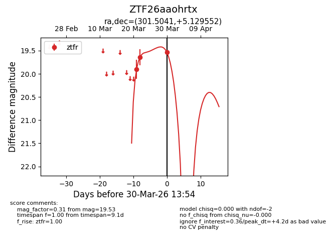
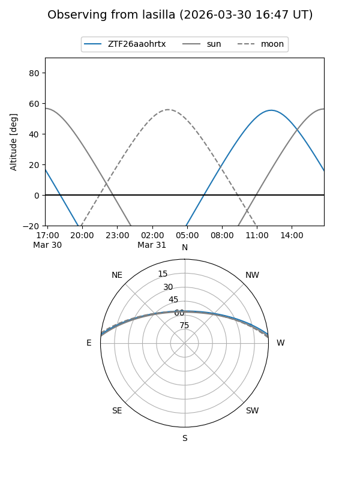
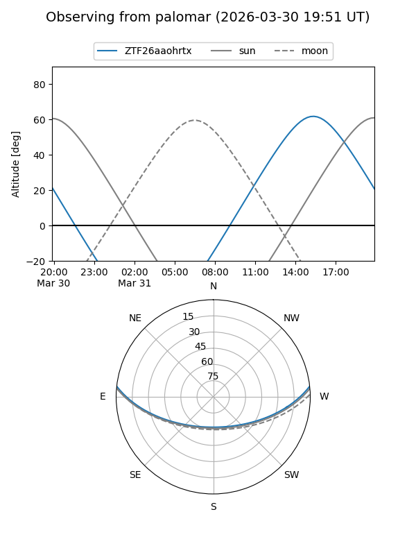
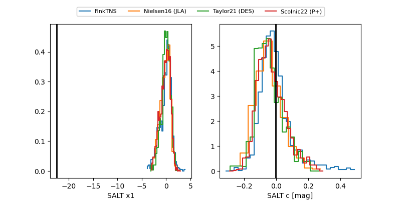

ZTF26aaohrtx
Target ZTF26aaohrtx at 2026-03-30 13:58
Aliases and brokers:
FINK: link
Lasair: link
ALeRCE: link
alt names
ZTF26aaohrtx (ztf,fink_ztf)
Coordinates:
equatorial (ra, dec) = 301.5041,+5.12955
equatorial (HMS+DMS) = 20:06:00.98,+05:07:46.39
galactic (l, b) = (46.3284,-14.04115)
Flags:
Photometry:
last ztfr=19.53
3 ztfr detections
Lightcurve

Visibility


Additional plots
